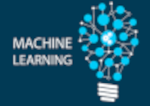
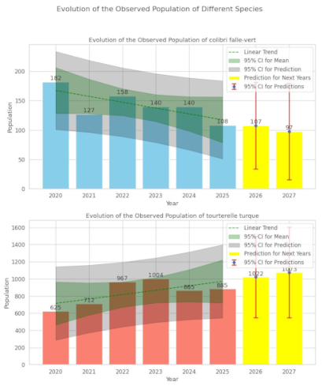
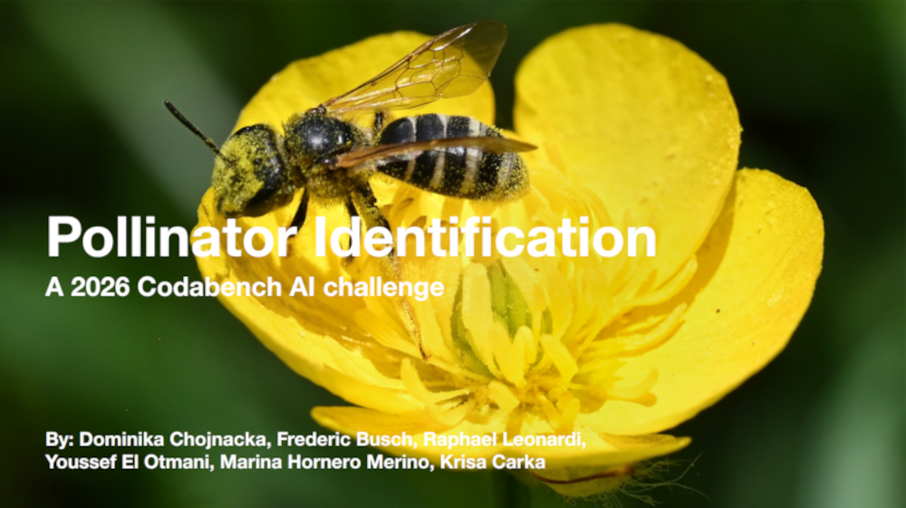
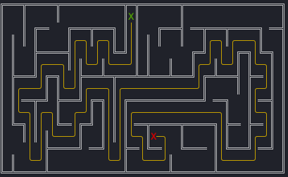
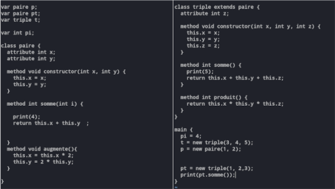
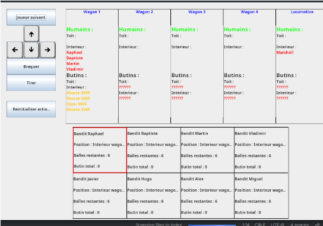
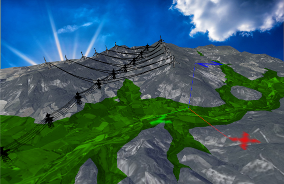

À propos de moi
Bienvenue sur mon site personnel ! Je m'appelle Raphael Leonardi, je suis un étudiant en M1 Artificial Intelligence à l'Université Paris-Saclay, intéressé par le Machine Learning et la Cryptographie. Vous pourrez trouver ici quelques liens vous permettant de mieux comprendre mon parcours dans l'informatique :
Parcours
-
Licence Double Diplôme Mathématiques Informatique
Pendant deux ans, j'ai étudié et découvert les combinaisons entre deux disciplines : les Mathématiques et l'Informatique, au sein de l'Université Paris-Saclay, dans la ville de Bures-sur-Yvette. -
LDD3 Magistère Informatique
Après deux ans de Mathématiques et d'Informatique, j'ai décidé de me spécialiser dans l'Informatique en rejoignant le Magistère d'Informatique. -
Travail Encadré de Recherche
J'ai effectué un TER à l'INRIA au sein de l'équipe GRACE, sous le tutorat du post-doctorant Christophe Levrat. Mon travail consistait à étudier et implémenter des protocoles de preuve 0-knowledge pour des procédés cryptographiques. -
Stage de Recherche – INRIA
Stage effectué sous la tutelle de Christophe Levrat. Mon activité principale consistait à découvrir et implémenter un algorithme de chiffrement post-quantique en C : l'algorithme HQC basé sur les codes correcteurs. -
M1 Artificial Intelligence
J'effectue actuellement à l'université Paris-Saclay un Master en Informatique, mention Artificial Intelligence.
Compétences
Au fil de mes années d'expérience en informatique et en mathématiques, j'ai eu l'occasion de maîtriser une variété de langages de programmation et d'outils de développement. Vous trouverez ci-dessous des tableaux listant mes compétences.
| Langage de programmation | Niveau |
|---|---|
|
Confirmé
|
|
|
Avancé
|
|
|
Intermédiaire
|
| Librairie / Logiciel | Domaine |
|---|---|
|
 |
|
| Logiciels de programmation | |
| Environnements Graphiques |
Projets
Voici quelques projets que j'ai réalisés, certains pour l'université, et d'autres de ma propre initiative.

Étude statistique des populations d'oiseaux en Martinique
Étude et analyse statistique sur la biodiversité des populations d'oiseaux de Martinique, basées sur des observations réalisées par des bénévoles sur plusieurs années. Réalisé en collaboration avec Baptiste Pras.

Creation d'un challenge IA sur Codabench
Création d'un challenge d'IA sur la plateforme Codabench, qui avait pour but d'identifier l'espèce d'un pollinateur à partir d'image d'insectes sur une fleur. Je l'ai créé en équipe dans le cadre de mon Master 1, basé sur un dataset d'images fournies par l'INRAE. Nous avons ensuite du résoudre un challenge soumis par une autre équipe qui consitait à identifier des espèces de graines.

Résolution de labyrinthes en OCaml
Le but de ce projet était de créer des algorithmes pour générer, résoudre et afficher des labyrinthes dans un terminal. Réalisé en collaboration avec Baptiste Pras.

Projet Kawa
J'ai dû implémenter comme projet final un mini-langage appelé Kawa, s'inspirant de Java, en utilisant OCaml et plus précisément la bibliothèque Menhir.

Colt Express
Implémentation en Java du jeu de société Colt Express, en utilisant la bibliothèque Swing.

Processing 3D
Implémentation d'éoliennes et de pylônes en 3D en Processing.
Stages & Expériences Professionnelles
Stages
Stage de Recherche
Mai – Juil 2025INRIA — Équipe GRACE
Ce stage au sein de l'équipe GRACE de l'INRIA, sous la tutelle du post-doctorant Christophe Levrat, avait pour but de découvrir et d'implémenter l'algorithme de chiffrement HQC. J'ai pu découvrir la cryptographie post-quantique et plus particulièrement les algorithmes basés sur les codes correcteurs d'erreurs, en langage C.
Travail Encadré de Recherche
Jan – Avr 2025INRIA — Équipe GRACE
Étude et implémentation de protocoles de preuve 0-knowledge pour des procédés cryptographiques, sous le tutorat du post-doctorant Christophe Levrat. J'utilise le langage C et la bibliothèque Pari GP pour implémenter ces procédés.
Stage de 3ème
Décembre 2018Laboratoire de Recherche en Informatique (LRI)
Découverte des bases de l'informatique et du langage Python sous le tutorat de Jean-Christophe Filliatre.
Expériences Professionnelles
AI Expert pour Outlier
2024 — actuellementOutlier
Je travaille en Freelance pour l'entreprise Outlier. Mon travail consiste à entraîner, tester, noter et corriger des IA pour générer et corriger des programmes informatiques. On me confie également de temps à autre la tâche de corriger les travaux d'autres contributeurs.